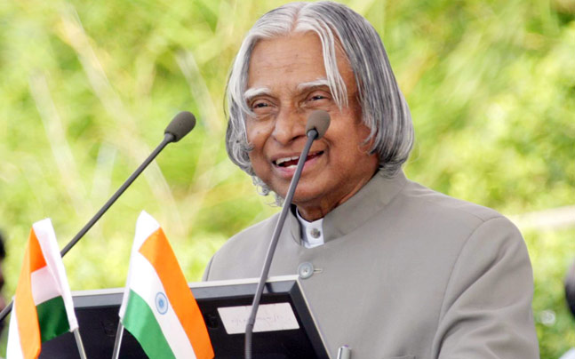

DEATH
On 27 July 2015, Kalam travelled to Shillong to deliver a lecture on "Creating a Livable Planet Earth" at the Indian Institute of Management Shillong. While climbing a flight of stairs, he experienced some discomfort, but was able to enter the auditorium after a brief rest.At around 6:35 p.m. IST, only five minutes into his lecture, he collapsed.He was rushed to the nearby Bethany Hospital in a critical condition; upon arrival, he lacked a pulse or any other signs of life.[85] Despite being placed in the intensive care unit, Kalam was confirmed dead of a sudden cardiac arrest at 7:45 p.m. IST. His last words, to his aide Srijan Pal Singh, were reportedly: "Funny guy! Are you doing well Following his death, Kalam's body was airlifted in an Indian Air Force helicopter from Shillong to Guwahati, from where it was flown to New Delhi on the morning of 28 July in an air force C-130J Hercules. The flight landed at Palam Air Base that afternoon and was received by the President, the Vice-President, the Prime Minister, Chief Minister of Delhi Arvind Kejriwal, and the three service chiefs of the Indian Armed Forces, who laid wreaths on Kalam's body.His body was then placed on a gun carriage draped with the Indian flag and taken to his Delhi residence at 10 Rajaji Marg; there, the public and numerous dignitaries paid homage, including former prime minister Manmohan Singh, Congress President Sonia Gandhi and Vice-President Rahul Gandhi, and Uttar Pradesh Chief Minister Akhilesh Yadav. On the morning of 29 July, Kalam's body, wrapped in the Indian flag, was taken to Palam Air Base and flown to Madurai in an air force C-130J aircraft, arriving at Madurai Airport that afternoon. His body was received at the airport by the three service chiefs and national and state dignitaries, including cabinet ministers Manohar Parrikar, Venkaiah Naidu, Pon Radhakrishnan and the governors of Tamil Nadu and Meghalaya, K Rosaiah and V. Shanmuganathan. After a brief ceremony, Kalam's body was flown by air force helicopter to the town of Mandapam, from where it was taken in an army truck to his hometown of Rameswaram. Upon arriving at Rameswaram, his body was displayed in an open area in front of the local bus station to allow the public to pay their final respects until 8 p.m. that evening. On 30 July 2015, the former president was laid to rest at Rameswaram's Pei Karumbu Ground with full state honours. Over 350,000 people attended the last rites, including the Prime Minister, the governor of Tamil Nadu and the chief ministers of Karnataka, Kerala and Andhra Pradesh